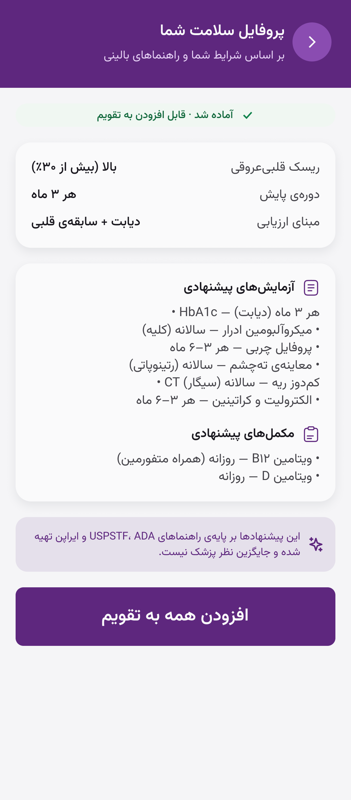
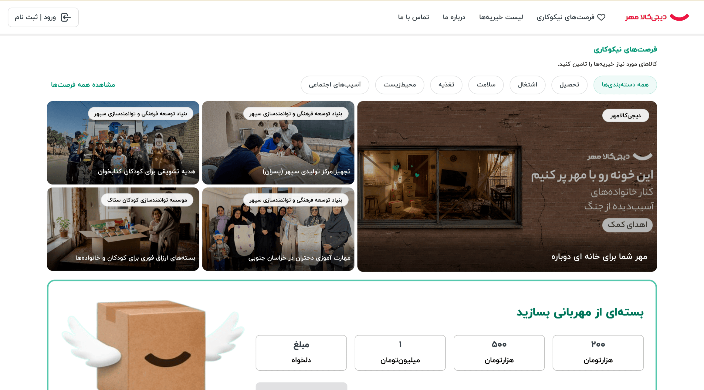
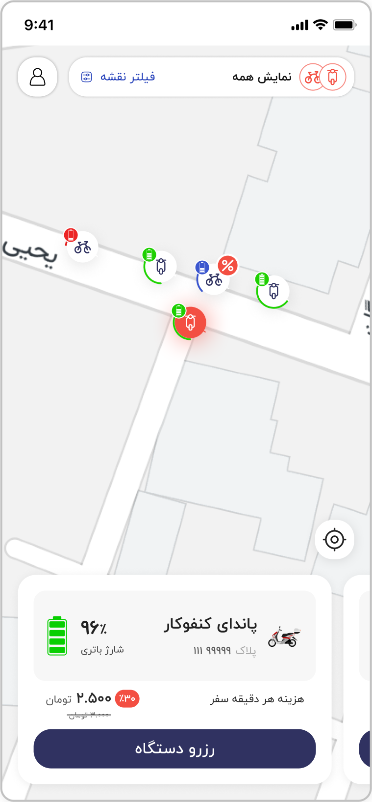
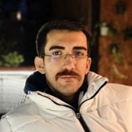

Trio
Zero to a Gitex-recognized enterprise device management platform, competing with Kandji and Jamf.
4.9★G2 rating · MVP shipped solo in 4 months
View case→
Enterprise platforms, AI-first products, and hard conversion problems — most joined at their most ambiguous stage. Hover the stack to hold a card, or pick a project from the list.
All projects →Zero to a Gitex-recognized enterprise device management platform, competing with Kandji and Jamf.

Iran's first AI healthcare assistant — grounded in officially vetted documents doctors can stand behind.

Sole designer at Iran's largest e-commerce company, on its hardest conversion problem.
Parental control rebuilt around ready-to-use profile roles, so setup stopped being the drop-off.
A four-panel care system coherent enough for a fully outsourced team to build without gaps.

Iran's first e-bike and scooter sharing service, redesigned across mobile and web.
A government-backed, Shopify-class commerce platform built to be Greece's homegrown alternative.
Iran's first agriculture super-app — a chat-centric AI product for farmers, backed by Keshavarzi Bank.
Design strategy and one unified system across admin panels for complex AI infrastructure platforms.
“Farhad has a rare combination of strong design skills, product thinking, and technical understanding. He doesn't just make things look good — he asks the right questions, challenges assumptions, and keeps the user experience at the center of every decision.”
“An exceptional product designer with deep expertise in enterprise design and design-strategy leadership. I was consistently impressed by his attention to detail, thoughtful approach, outstanding communication, and his ability to leverage AI effectively throughout the design process.”
“Farhad was our Product Design Lead at Trio — in practice, closer to a product manager with world-class UI/UX skills. Enterprise B2B is genuinely hard to design for; he researched deeply, simplified relentlessly, and shipped interfaces that made a complicated product feel manageable. I'd work with him again without hesitation.”

“An exceptional professional and talented designer who excels at collaborating with development teams to deliver products seamlessly. His expertise and proactive approach ensure outstanding results and a smooth product launch.”